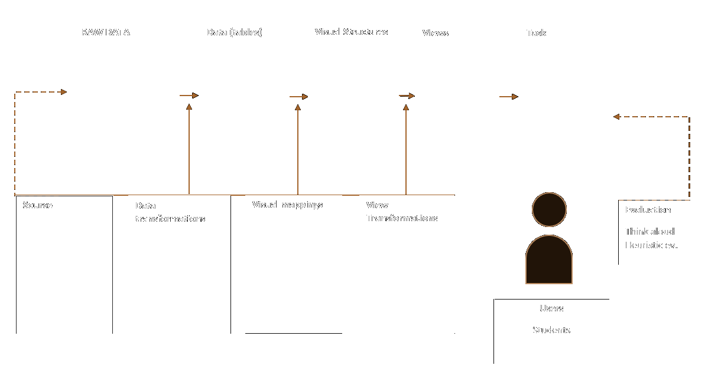
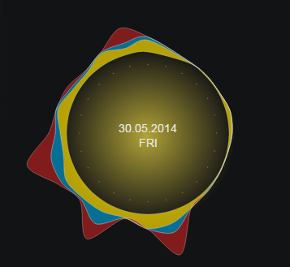

The aim of this project work has been to visualize the data about home utilities(electricity, hot water, cold water) consumtion over a period of time.
Based on the source data and the assignment, I have started by contructing the visualization pipeline(Fig.1) for a better understanding of the process and as a reference for the ongoing work.
The innitial data(Raw) contained a variety of values for different time periods and also with a different step. For this particular visualization I have focused on a two months hourly data.
The values for each of the selected utilities was in separate files, therefore I have applied some data transformation by merging it into one structure that could be further used as a source for the visualization(data tables).
 Figure 1. Visualization pipeline
My goal was to visualize the data in a way that will allow comparison between different utilities, however plotting on the same axis values of different types could create confusion. Therefore was needed a way of converting the data to be of the same type. I have chosen to represent the consumed data by the amount of expenses that it actually causes, which would facilitate the comparison between different values. For this I have multiplied the value of each utility to it's most recent cost(in Stockholm.)
The price conversion is as follows
The resulting visualization is presented bellow (Figure 2). Each of the utilities expenses are color coded as follows:
 Figure 2. Day overview of utilities expenses by hour
In the center of the chart, is a pulsating gradient that indicated if for this specific day any of the utilities expenses are higher that their corresponsing average values. In Figure 2 for instance the expense of electricity is higher that the average dayly expenditure, so the pulsating gradient is yellowish , which signifies that. In the center of the graph is indicated the current date and week day.
Another purpose of the project has been to create a piece of art that would combine an ambient visualization of information with art, which I have tried to achieve through a minimalistic design and smooth transitions. You can enjoy the resulting